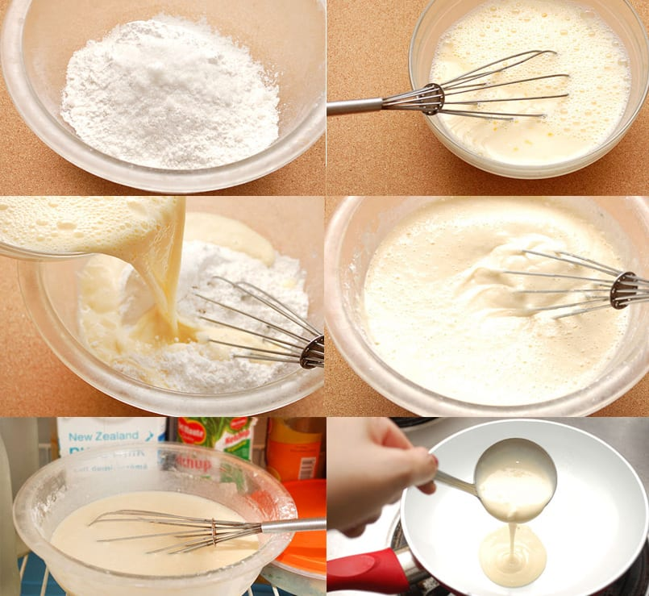

Ingredientes
Para la masa:
- 125 gramos de harina
- 2 huevos
- 250 ml de leche
- 50 gr de mantequilla
- 5 gr de azúcar
- 1 pizca de sal
- 1 huevo
- 1 cucharadita de mantequilla para untar la sartén

Pasos
Primer paso
Funde la mantequilla introduciéndola en el microondas durante 30 0 40 segundos.
Segundo paso
Pon en un vaso de batidora la leche, la mantequilla fundida y los huevos. Añade la harina, el azúcar y la sal. Tritura todos los ingredientes y pasa la mezcla por un colador para eliminar cualquier grumo que pueda tener.
Tercer paso
Unta una sartén antiadherente con una cucharadita de mantequilla con la ayuda de un pincel o brocha. Pon a calentar la sartén a fuego medio.
Cuarto paso
Vierte un poco de masa y espárcela bien por toda la sartén. Cuando empiece a cuajarse, dale la vuelta y cocina brevemente por el otro lado. Repite la operación hasta terminar toda la masa.